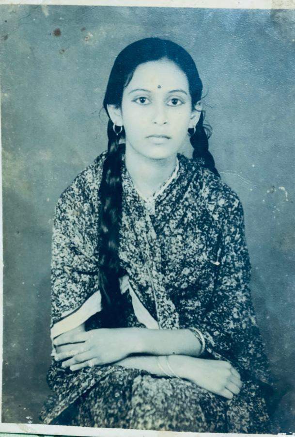
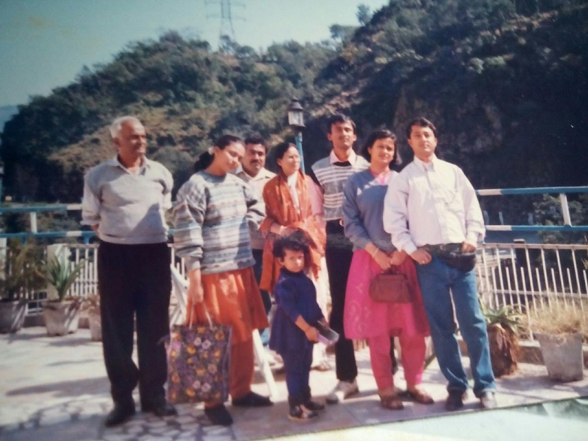

Muga silk · Assam
Assam
Muga Silk
The golden silk of Assam — and the textiles and motifs I associate with Kaziranga.
Our story · আমাদের কথা
It was born from memory — the memory of a woman who first introduced me to the world, and to the saree. And those memories, in turn, gave me the confidence to begin again.

“I lost her. But somehow, I have never been able to let her go.”
Tripti Crafts was born somewhere between the pain of that loss, the persistence of her memory, and the joy of finding her again in the folds of a saree.

01 — Origin
My mother loved sarees. She would admire the beautiful ones others wore, but there was never bitterness in her voice. We were an ordinary middle-class family, and for her our education and the needs of the family always came first. Buying something beautiful for herself was rarely a priority.
So Tripti Crafts is not simply a saree business for me. It is a way of returning to my mother — and, after crossing fifty, a way of finding myself again and beginning something of my own. Perhaps there is no particular age at which we must stop returning to our dreams.
02 — A memory in cloth
When I started earning, one of the first things I wanted was to buy sarees for my mother. I remember giving her a beautiful saree with a red border — and after that, whenever I could, bringing her the things she had loved but never bought for herself.
Even one of the last things she spoke of before she died was a saree. She told me that Bapi had given her ten thousand rupees, and asked me to buy her a Banarasi. That memory stayed with me. When a desire is tied to a deeper pain, it becomes more than a wish.
“The woman I had lost, and the woman I still wanted to become.”
বস্ত্র · bostro — cloth
I want to question the idea that the saree belongs only to women. Why only women? Tripti Crafts should be open to women, men, transgender people — anyone who finds themselves in a saree, or in Indian textiles. My own taste inevitably enters what I select. But every saree also carries the possibility of becoming someone else’s story.
03 — অনুভব · Anubhav
We live in a world of AI, where a saree can be placed onto an image and made to look beautiful. But where is the touch, the memory, the experience of actually wearing it?
I love the act of touching a saree, feeling it against the body, allowing it to become part of you. When a Tripti Crafts saree reaches another person, what matters to me is the wearer’s own relationship with it — how they touch it, how they wear it, what it becomes for them.
The Tripti welcome
I don’t want anyone to feel, “I entered a shop, I must choose something and buy it.” I want warmth — almost the feeling of coming into someone’s home.
Stay a while. Feel the cloth. There is no hurry to decide, and no one to hurry you.
“Someone in my family used to wear this.” Shopping rarely leaves room for such small feelings. We do.
I want you to leave carrying more than the saree you bought — perhaps nostalgia, perhaps something new.
From the Live to your wardrobe
First the saree appears on your screen — a colour, a fall, a border that catches your eye.
For a moment the saree takes a form through my body. You see how it moves, how it drapes.
Something speaks to you, and you decide. Especially when there is only one piece, the choice feels intimate.
It reaches your home. You touch it for the first time, and the saree you first saw on me becomes yours.
Three flowers from the garden
There are extraordinary handloom traditions across every region of India — I would never limit us to three. But these are the textiles I feel most drawn to. What draws me is the presence of the hand: you can feel that somebody has made the cloth.
Assam
The golden silk of Assam — and the textiles and motifs I associate with Kaziranga.
Bengal
A soft, storied silk carried down the river towns of Bengal.
Bengal
A crisp, everyday handloom cotton with the labour of the loom in every inch.
“Before fashion and brands, there was cloth.”
Five years from now
I dream that the weavers I work with today can grow alongside us — that craftspeople choose to continue with Tripti Crafts because our relationship is good for them and their families, because their work is valued, and because they too have room to grow creatively.
A stronger website, a wider reach, customers across the world. And one thing that must never change, however big we become: the patience to listen — to actually hear what people want, what they don’t, and what they love.
Meet the weaversIt allowed my memories to become not only something I looked back upon, but something from which I could begin again. And who is the ‘Tripti’ person? Everyone. I do not want income, age, gender or occasion to decide whether someone is worthy of beautiful textiles.